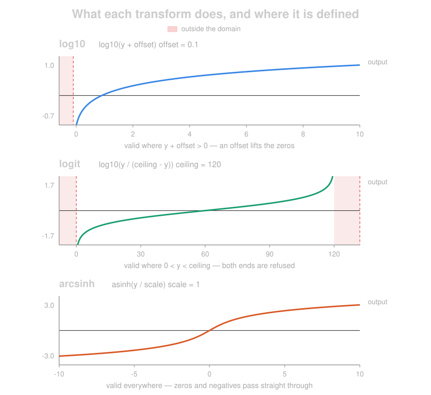
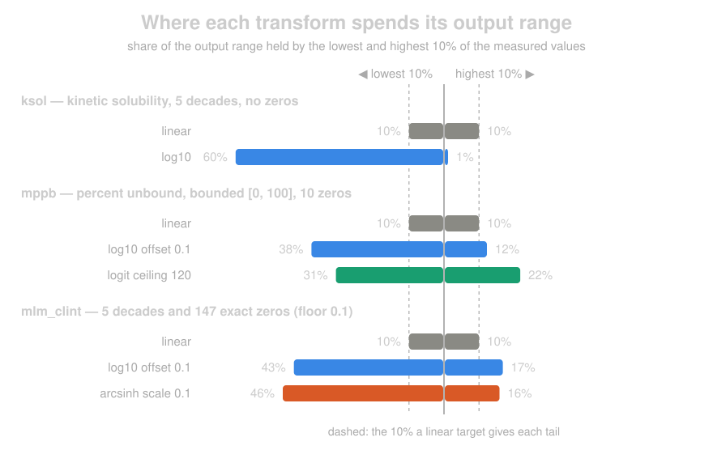
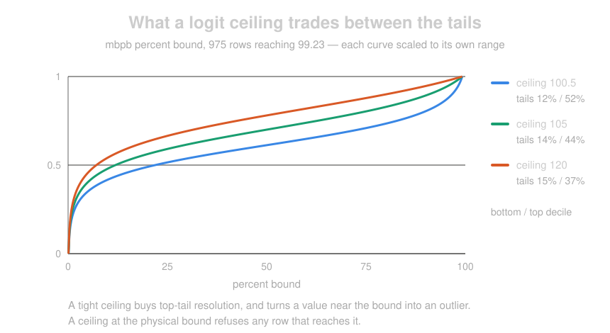

Target Transforms
A skewed target often trains better in transformed space — log10 on a concentration, a
solubility, a percent unbound. The transform belongs on the model, not on the FeatureSet:
- No FeatureSet to rebuild, and one FeatureSet feeds models with different transforms
- Metrics stay on the original scale, so a transformed model compares directly against an untransformed one
- A transformed model goes through promotion like any other
Training applies the transform to the target column; inference inverts it. Predictions come back in the units you measured.
Available for XGBoost, PyTorch, ChemProp, TabICL and Atom-JEPA, regression only.
| transform | map | reach for it when |
|---|---|---|
log10 |
log10(y + offset) |
the target spans decades and stays positive |
logit |
log10(y / (ceiling - y)) |
the target is bounded at both ends (a percent) |
arcsinh |
asinh(y / scale) |
the target has exact zeros, a BLQ pile-up, or negatives |

Each map is monotonic increasing, so rank metrics are untouched; what differs is the shape and
what each one refuses. log10 needs y + offset > 0, logit needs 0 < y < ceiling, and
arcsinh accepts every real number.
Setting one
Two hyperparameters on an otherwise normal to_model() call:
from workbench.api import FeatureSet, ModelType, ModelFramework
fs = FeatureSet("mppb_raw")
model = fs.to_model(
name="mppb-xgb-log10",
model_type=ModelType.UQ_REGRESSOR,
model_framework=ModelFramework.XGBOOST,
target_column="mppb",
feature_list=features,
hyperparameters={
"target_transform": {"name": "log10", "offset": 0.1},
"prediction_bounds": [0.0, 100.0],
},
)
end = model.to_endpoint()
end.inference(eval_df) # percent unbound, not log space
| hyperparameter | default | what it does |
|---|---|---|
target_transform |
None (identity) |
the map applied to the target during training and inverted at inference |
prediction_bounds |
None |
[low, high] clip on the predictions, applied after the inverse |
The model stores what it was fitted with, and inference reads that back — so the inverse is always exactly the forward that trained it, never a separately-passed value that can drift.
Picking one: three real assays
Every number below is measured on OpenADMET training data, loaded straight from
PublicData(). The three assays want three different transforms, for three different reasons.

ksol: five decades, nothing to decide → log10
Kinetic solubility runs 0.00285 to 325 µM across 5128 compounds — 5.06 decades, no zeros, no
negatives. The offset exists to rescue zeros, and this assay has none, so a bare log10 is the
whole spec:
from workbench.api import DataSource, Endpoint, FeatureSet, ModelFramework, ModelType, PublicData
df = PublicData().get("comp_chem/openadmet/expansionrx/train/ksol")
DataSource(df, name="ksol_raw").to_features("ksol_raw", id_column="id")
features = Endpoint("smiles-to-2d-v1").output_columns()
model = FeatureSet("ksol_raw").to_model(
name="ksol-log10",
model_type=ModelType.UQ_REGRESSOR,
model_framework=ModelFramework.XGBOOST,
target_column="ksol",
feature_list=features,
hyperparameters={"target_transform": "log10"},
)
That hands the lowest decile of the data 60% of the output range against a linear map's 10%, and the top decile 1%. On a solubility that is the right trade: 0.003 µM against 0.03 µM is a decision, 300 µM against 325 µM is not.
mppb: bounded at both ends → logit
Percent unbound is bounded at 0 and at 100 by physics, and the 1302 measured values run 0 to
87.6 with 10 exact zeros. log10 resolves the low end and crushes the high one. A logit keeps
both, and the figure above shows the trade in one line: log10 with an offset of 0.1 splits
the range 38% / 12% between the tails, while a logit with a ceiling of 120 splits it 31% / 22%.
A logit refuses zeros and clamps nothing itself, so the clamp belongs in the FeatureSet, where it stays visible in the data:
df = PublicData().get("comp_chem/openadmet/expansionrx/train/mppb")
df["mppb_floored"] = df["mppb"].clip(lower=0.1) # 10 BLQ rows, to the assay's floor
DataSource(df, name="mppb_raw").to_features("mppb_raw", id_column="id")
model = FeatureSet("mppb_raw").to_model(
name="mppb-logit",
model_type=ModelType.UQ_REGRESSOR,
model_framework=ModelFramework.XGBOOST,
target_column="mppb_floored",
feature_list=features,
hyperparameters={"target_transform": {"name": "logit", "ceiling": 120.0}},
)
No prediction_bounds here: the inverse of a logit lands in (0, ceiling) by construction.
mlm_clint: decades and a pile of zeros → arcsinh
Mouse liver microsome clearance is the awkward case — 4522 rows spanning 0 to 10355, five
decades like ksol, but with 147 exact zeros where the compound did not turn over. log10
can handle it only if you pick an offset, and picking one is a real piece of analysis.
arcsinh needs no such decision, and lands in almost the same place: 46% / 16% against
log10's 43% / 17% with the offset set at the assay's smallest non-zero reading.
df = PublicData().get("comp_chem/openadmet/expansionrx/train/mlm_clint")
DataSource(df, name="mlm_clint_raw").to_features("mlm_clint_raw", id_column="id")
model = FeatureSet("mlm_clint_raw").to_model(
name="mlm-clint-arcsinh",
model_type=ModelType.UQ_REGRESSOR,
model_framework=ModelFramework.XGBOOST,
target_column="mlm_clint",
feature_list=features,
hyperparameters={
"target_transform": {"name": "arcsinh", "scale": 0.1},
"prediction_bounds": [0.0, None],
},
)
arcsinh is unbounded in both directions, so unlike the logit this one does want a lower
bound — a clearance cannot be negative.
The same argument settles a target that goes below zero outright: logd runs -2 to 5.2 over
5039 rows with 238 negative values, and no offset makes log10 the right tool for it.
log10 and its offset
log10 is log10(y + offset), and offset defaults to 0. A bare "log10" is therefore a
plain log10(y); log10(y + 1) is written out:
"target_transform": "log10" # log10(y)
"target_transform": {"name": "log10", "offset": 1.0} # log10(y + 1)
The offset belongs just above the assay's reporting floor — the smallest value the assay actually reports. Below that floor the assay cannot separate values, so resolution spent there is spent on noise.
Zeros pin it down more precisely. A target containing 0 raises without an offset, and those zeros are normally below-quantitation rows; the offset decides where they land relative to the real readings. Keep them within a few reporting steps of the floor — near enough to read as "under the lowest measurement," rather than the ten or more steps that turn a handful of rows into a detached cluster for the loss to chase.
Both numbers come out of the data:
import numpy as np
y = fs.pull_dataframe()["mppb"]
readings = np.sort(y[y > 0].unique())
floor = readings[0] # smallest real reading
step = np.median(np.diff(np.log10(readings[:10]))) # typical step, in log units
The same rule lands on very different offsets, because assays report to different precision:
| reporting floor | typical step | offset | zeros sit |
|---|---|---|---|
| 0.1 (MPPB) | 0.079 log units | 0.1 | 3.8 steps below the floor |
| 0.002 | 0.125 log units | 0.005 | 1.2 steps below the floor |
A 50x difference in offset for two readings of the same quantity, so copying a number from another model is the one reliable way to get this wrong.
As a sanity check, an offset large relative to the target's range stops being a transform at all. Share of the transformed output range given to the bottom decile of the data, where a linear map gives 10%:
| target range | offset 1.0 | offset 0.1 | offset 0.01 |
|---|---|---|---|
| 0 – 1 | 13.8% | 28.9% | 52.0% |
| 0 – 87.6 (MPPB) | 50.8% | 66.2% | 74.6% |
So offset=1.0 over a fraction is barely a transform at all, while the same offset over a
percentage is a strong one.
logit, for a target bounded at both ends
A percent-type target — oral bioavailability, percent unbound — is bounded at 0 and at 100,
and log10 resolves only the low end. On %F it leaves the top decile 2.6% of the output
range, so the model stops separating 84% from 100% bioavailability.
logit is log10(y / (ceiling - y)), and ceiling sets how the range splits between the
tails (%F, rows at or under 100):
| map | bottom decile | top decile |
|---|---|---|
| linear | 7.7% | 16.4% |
| logit, ceiling 120 | 54.6% | 8.3% |
| logit, ceiling 105 | 48.3% | 15.3% |
| logit, ceiling 100.5 | 39.9% | 28.6% |

The figure measures that on mbpb, percent bound, whose 975 values reach 99.23 — close
enough to the bound that the ceiling choice is visible in real data rather than in principle.
A ceiling above the physical bound leaves every measured value defined. A ceiling at the bound gives the top tail more room but rejects anything reaching it, and the error says so rather than swallowing the rows — raw %F data runs well above 100, so those rows are capped or dropped in the FeatureSet either way.
The domain is 0 < y < ceiling, and the transform clamps nothing of its own, so the map is
exactly invertible and metrics score against the target you supplied. Sub-LLOQ rows are
clamped or dropped in the FeatureSet, where they stay visible in the data:
That is the one thing logit asks of a FeatureSet that log10 and arcsinh do not: an
offset or a scale absorbs a zero inside the model, a ceiling cannot.
The inverse lands in (0, ceiling) by construction, so a logit model needs no
prediction_bounds. Bounds still apply after the inverse, so a high bound below the ceiling
clips real predictions into a mass point.
arcsinh, where zeros and negatives live
arcsinh is asinh(y / scale): logarithmic above scale, linear below it, defined for every
real target. No domain error and no offset to place against the assay's floor, which is what
makes it the one to reach for when the target has exact zeros, piles up at BLQ, or goes
negative (logD).
scale is the same knob as log10's offset — where resolution stops being spent — and
lands in the same place: 29.4% of the output range to the bottom decile of a 0-1 target at
scale 0.1, against 28.9% at offset 0.1. Share given to the bottom decile, where a linear
map gives 10%:
| target range | scale 0.01 | scale 0.1 | scale 1 | scale 10 |
|---|---|---|---|---|
| 0 – 1 | 56.6% | 29.4% | 11.3% | 10.0% |
| 0 – 100 | 76.7% | 69.7% | 56.6% | 29.4% |
scale defaults to 1.0, a plain asinh(y) — a strong transform on a percentage, barely a
transform on a fraction. Set it at the assay's reporting floor.
Domain errors
Every transform's domain is an interval, so the target's minimum and maximum decide whether a
spec can work at all. to_model() checks them against the FeatureSet's cached stats, which
costs no query and turns an unusable spec into a two-second error instead of a failed training
job:
mppb_raw column 'mppb': target_transform 'logit' needs target > 0, but the smallest target
is 0. Clamp those rows up to the assay's lower limit or drop them in the FeatureSet, or use
'arcsinh', which has no domain restriction.
Each transform carries its own remedy, because they differ:
| transform | out of domain | the fix |
|---|---|---|
log10 |
y + offset <= 0 |
raise the offset — it is lossless, and inverse recovers the value exactly |
logit |
y <= 0 |
clamp or drop those rows in the FeatureSet; the transform clamps nothing itself |
logit |
y >= ceiling |
raise the ceiling above the data, or cap the rows. A percent target holding an exact 100.0 needs a ceiling above 100 |
arcsinh |
never | — |
One case is a warning rather than an error: a negative target smaller in magnitude than a
log10 offset transforms and inverts exactly, so it is usable — but it is rarely what the
caller expected, and arcsinh represents negatives directly.
The same check runs inside the training job as a backstop, so a model script invoked directly still refuses out-of-domain data rather than training on NaNs.
Prediction bounds
prediction_bounds is independent of any transform — a non-negative or percentage target
wants it under the identity transform too. Either side may be None to leave it unbounded.
Clipped values pile up as a mass point at the bound, which destroys ordering among them, so bound only targets whose predictions should not reach the bound.
Bounds clip the point prediction and the UQ quantiles (q_05, q_95, …), which cannot
change interval coverage: a quantile predicts the target, the target obeys the bound, so the
clip only drops mass the model has declared impossible and the interval gets tighter for
free.
prediction_std stays the spread of the unclipped ensemble members, because clipping them
would shrink it exactly where predictions pile up at a bound, and UQ calibrates
expected_residual and confidence off that spread. So prediction ± prediction_std can
still reach past a bound, while the quantiles do not. A target that keeps hitting its bound
wants a logit, whose inverse is bounded by construction, rather than a clip.
Multi-target models
A single spec applies to every target. Since a multi-target model usually carries targets in
different units, a {target_column: spec} mapping sets them one at a time, and targets it
omits get identity:
hyperparameters={
"target_transform": {"ksol": "log10", "mppb": {"name": "log10", "offset": 0.1}},
"prediction_bounds": {"mppb": [0.0, 100.0]},
}
What inference gives back
| point prediction | inverse(mean) — the conditional median, which is what MAE scores |
prediction_std |
std of the inverted ensemble members, so the spread is in original units |
| metrics | always the original scale |
| rank metrics | identical with and without a transform |
That last row is the contract: the transform is monotonic, so Spearman and Kendall cannot move. Only placement-dependent metrics — MAE, RMSE, R² — change, and they change because the model learned something different, not because the scale shifted.
What a transform buys
MPPB percent unbound, 1302 compounds, out-of-fold, all metrics on the original scale:
| model | MAE | RMSE | spearman | MAE under 1% |
|---|---|---|---|---|
| no transform | 6.784 | 10.630 | 0.785 | 3.210 |
| log10, offset 0.1 | 6.602 | 11.145 | 0.791 | 1.826 |
Error on the clinically interesting tail drops 43% while RMSE rises 5%. Squared error in original space is dominated by the few high-unbound compounds; the transform spends its resolution on the low end instead. That trade is the whole reason to reach for one — and the reason to check the tail rather than the headline number.
Limits
- Regression only — a transform on a classifier raises
- Not available with a scikit-learn
model_class - Transforms live in workbench core. A plugin-registered transform would train and then fail
at deployment, since plugins are not on the endpoint import path and the serving container
rebuilds the transform from
hyperparameters.json. The contract a new one owes is in theworkbench.utils.target_transformmodule docstring, andassert_transform_contractintests/utils/test_target_transform.pychecks it - Cannot be HPO-searched. The target is transformed once, before the search runs, so a searched transform would differ between the trials and the winner's saved config that inference reads back. Set it as a top-level hyperparameter and search around it.
Questions?

The SuperCowPowers team is happy to answer any questions you may have about AWS® and Workbench.
- Support: workbench@supercowpowers.com
- Discord: Join us on Discord
- Website: supercowpowers.com